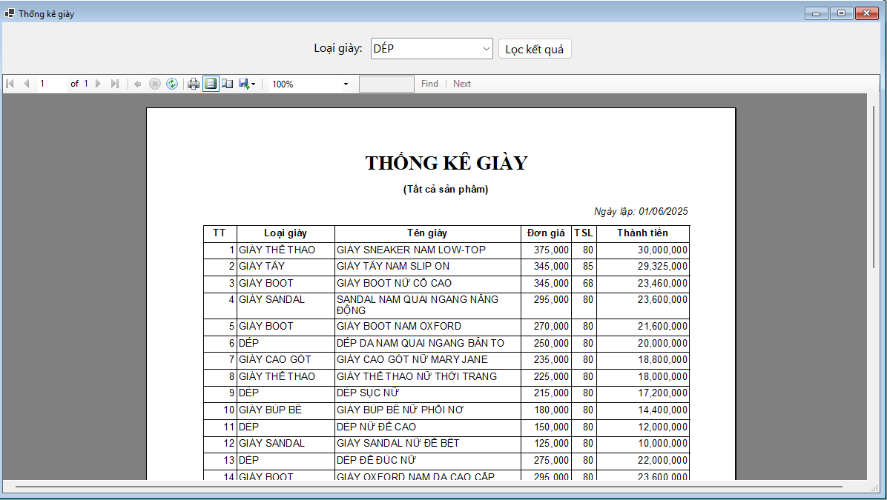

Hướng dẫn sử dụng màn hình Thống kê sản phẩm.
Bước 1: Đưa con trỏ chuột vào Báo cáo - Thống kê sau đó click chuột chọn Thống kê giày sẽ hiện ra form Thống kê giày.
Bước 2: Form Thống kê giày gồm Lọc kết quả theo Loại giày và hiển thị các sản phẩm thuộc loại giày đã chọn..
Bước 3: Ở bảng thống kê giày gồm TT, Loại giày, Tên giày, Đơn giá, TSL, Thành tiền.
Bước 3: Trên thanh công cụ (gần phía trên của bảng), có thể Phóng to / thu nhỏ báo cáo, In báo cáo bằng biểu tượng máy in và Xuất báo cáo ra các định dạng khác như PDF/Excel.